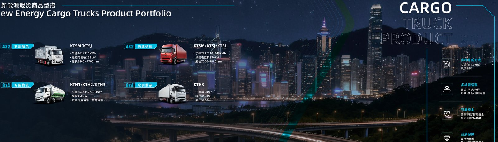

Winter is the season that exposes weak electric truck deployments, but with heated LFP batteries and the right charging routine a TE8L electric tractor runs reliably through Central Asian cold that would stall an unprepared fleet. This guide covers heated battery operation, real -20°C range data, and charging routines for cold-chain fleets, written for operators in the Kazakhstan electric truck market where continental winters are long and severe.
Battery chemistry slows in the cold. Below freezing, an LFP pack delivers less usable energy and accepts charge more reluctantly, which is why an unheated truck can lose 20 to 40 percent of its warm-weather range at -20°C. The loss comes from two sources: the pack holds back capacity to protect itself, and cabin and battery heating draw energy that a summer truck does not need. The fix is not a bigger pack alone; it is thermal management that keeps the cells in their working temperature band.
The TE8L's CATL LFP pack includes active heating that warms cells before and during use, restoring most of the lost performance. By holding the pack near its comfort zone, heating recovers range that would otherwise vanish and lets the truck fast-charge without damaging cold cells. The cost is some energy spent on heating, but that spend is far smaller than the range lost to an unheated pack. At -20°C, a heated 422 kWh pack still delivers a usable 200 km-plus realistic range for most corridor work.
| Condition | Unheated range | Heated range |
|---|---|---|
| +20°C | 260 km | 260 km |
| 0°C | 210 km | 245 km |
| -20°C | 160 km | 215 km |
| Heating energy cost | n/a | 8 to 12 percent of pack |
Field data from cold regions shows the heated TE8L holding roughly 215 km of realistic range at -20°C against a warm-weather 260 km, a loss of about 17 percent after heating is accounted for, far better than the 35 to 40 percent an unheated pack would suffer. For the Kazakhstan electric truck market, where winter lows routinely hit -20°C and below, that retained range is the difference between a working fleet and a parked one.
Cold charging needs discipline. Plug in the truck while it is still warm from driving so the pack enters charge near its working temperature, and precondition the battery before a fast charge so the cells accept power at full rate. Depots in cold regions should keep chargers sheltered and, where possible, warm the pack during the charge session. Battery swap remains an option, with a five to six minute exchange that moves a cold truck back into service without a long outdoor charge.
Cold-chain fleets face a double load: they must heat the box and the battery. The TE8L's electric architecture can run refrigeration from the pack efficiently, but operators should budget the reefer draw into the winter range plan. The good news is that a heated, electric cold-chain truck produces no diesel fumes inside the load bay environment and keeps temperature control precise, an advantage for pharmaceutical and food freight across Central Asia.
The Kazakhstan electric truck market spans vast distances and harsh winters, exactly the conditions that reward a heated, long-corridor tractor. The TE8L electric tractor with its 422 kWh heated CATL LFP pack is suited to the regional corridors where charging depots are spaced but winter is brutal. Fleets that adopt the heated routine above report stable winter operations with none of the range anxiety that plagues unheated deployments.
Readiness is mostly procedure. Train drivers to precondition, to plug in warm, and to respect the winter reserve. Equip depots with sheltered charging. Monitor per-truck winter range and adjust routes as temperatures swing. With those steps, the TE8L runs through -20°C reliably, and the Central Asian cold becomes a manageable operating condition rather than a fleet-killer.
Cold hits more than the battery. Tire pressure drops, road surface turns to ice and snow, and traction control matters more. The TE8L's low-center-of-gravity battery actually helps stability on slippery roads, and its electric drivetrain delivers torque smoothly without the wheelspin a diesel clutch can provoke. Fleets should fit winter tires and check pressure weekly, because a few psi lost to cold compounds into meaningful range and grip loss.
Winter readiness starts before the first freeze. Inspect the heating loop, verify the preconditioning function, service the sheltered charger, and brief drivers on the winter reserve. A depot that prepares in autumn avoids the November scramble when every truck suddenly needs heat. The TE8L electric tractor is built for this, but the procedure, not the hardware, decides whether the season goes smoothly.
Heating the cab draws from the pack, so a disciplined strategy matters. Pre-heat the cab while still plugged in so the energy comes from the wall, not the battery, then maintain a moderate setpoint rather than a tropical one. Heat only the driver zone where possible. These habits trim winter draw by several percent, which on a 422 kWh pack is meaningful range returned to the wheels.
When temperatures drop hard, a five to six minute battery swap keeps a cold truck moving without a long outdoor charge that loses efficiency to the cold. Swapping also lets packs warm and charge in a controlled environment, protecting cycle life. For Central Asian fleets running through -20°C and below, swap is a pragmatic winter tool, not just a summer convenience, and it keeps utilization high when the weather is worst.
Winter route planning adds a 20 percent reserve and favors corridors with indoor or sheltered charging. The Kazakhstan electric truck market spans exactly these conditions, and fleets that plan around heated depots and conservative reserves report stable operations with none of the strandings that hit unprepared deployments. Plan for the cold, and the cold stops being the constraint.
Track per-truck winter range and compare it to the summer baseline so the heating load is visible, not guessed. Fleets that meter this find the real world matches the heated-data table above, which builds confidence to keep expanding through the cold months. The data also flags any truck with an underperforming heater before it becomes a reliability problem.
For pharmaceutical and food freight, the electric cold-chain truck is a strength in winter, because electric refrigeration holds setpoint precisely without a diesel engine fighting the cold. The TE8L's architecture runs the reefer efficiently off the pack, and operators report tighter temperature bands than with diesel reefers. In Central Asia, where cold-chain integrity is both a business and a regulatory requirement, that precision is a competitive edge.
For operators entering the Kazakhstan electric truck market, the lesson is that cold is solvable. Heated LFP batteries, a 422 kWh pack with margin, and disciplined charging turn winter from a threat into just another route factor, and the TE8L electric tractor is built to make that routine rather than exceptional.
Ready to electrify your fleet? Contact Shaanxi Fenghan Trading — authorized Dongfeng EV truck exporter. WhatsApp: +86 153 1943 1311 | Email: sales@fenghan-trade.com | dongfengevtrucks.com
🌐 Our Network: Fenghan Trade (SAGMOTO/SHACMAN Truck Export) · SAGMOTO heavy duty diesel trucks